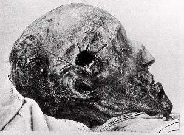

ДУРНАЯ ГОЛОВА СТРАНЕ ПОКОЯ НЕ ДАЕТ
Большое несчастье для страны, если у ее правителя в голове завелся таракан величия. Особенно воинственный. Подобных примеров в истории множество. Один из самых впечатляющих и патологических — история шведского короля Карла XII, которого сегодня уместно вспомнить, потому что окончилась эта поучительная история как раз 11 декабря.
Карл воображал себя викингом нового времени, рыцарем без страха и упрека. Это был настоящий «человек войны», ни с кем не шедший на компромисс и готовый сражаться за то, что он называл честью, до последней капли крови. У королей в таких случаях имеется в виду кровь его подданных.
Восемнадцать лет Карл метался из конца в конец Европы, проливая реками кровь своих и чужих солдат, да и не только солдат. Целые области Прибалтики, Украины, Польши и Саксонии покрылись пепелищами и кладбищами. А больше всего досталось собственной стране бешеного Карла.
При населении в миллион сто тысяч Швеция потеряла двести тысяч человек — примерно половину взрослых мужчин. Благополучное королевство пришло в запустение и обнищало, поля оставались невозделанными, торговля заглохла, люди умирали от голода. Из этой ямы шведы потом будут выбираться целых сто лет.
Но на всякую дурную голову в конце концов сыщется управа.
11 декабря 1718 года пуля дырочку нашла. И даже дырищу, очень большую.
При осаде маловажной норвежской крепости Фредриксден полоумный Карл получил в башку заряд солидного восемнадцативекового калибра. Неизвестно, кто стрелял, но этому безымянному герою шведы должны были бы поставить памятник.